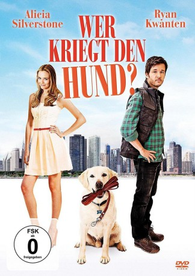

gesehen am 09.02.2017
gesehen am 09.02.2017Alternativ: Who Gets the Dog? gesehen am 09.02.2017
 
 IMDB-Wertung: 4.7 / 10
IMDB-Wertung: 4.7 / 10  Metascore:
Metascore: 
Olive Greene und Clay Lonnergan sind seit Jahren ein Paar und leben zusammen. Doch nach so langer Zeit läuft es nicht mehr so gut zwischen ihnen: Der relativ erfolglose Regionalliga-Hockeytorwart fühlt sich von der Krankhausärztin eingeengt. Auf den Wunsch, sich zu trennen, reagiert Olive nicht gerade begeistert, willigt aber ein. Schnell ist beschlossen, dass sie in der gemeinsamen Wohnung bleibt und er sich etwas Neues suchen muss. Als er dann auszieht, will er ebenfalls den gemeinsamen Hund Wesley mitnehmen, doch seine Ex will das Tier nicht hergeben. Beide beharren darauf, ihren geliebten tierischen Freund zu behalten. Wesley scheint sichtlich überfordert mit der Situation und stellt alles auf den Kopf…
Jahr: 2016
Dauer: 92 Minuten
FSK: 0
Land: USA Studio: Samuel Goldwyn FilmsTonspuren: DD5.1 - ,
Untertitel:
Auflösung: 1080p (1920x816) Größe: 6553 MB
Genre: Komödie
Regisseur: Huck Botko
Drehbuch: Michael D. Weiss
Soundtrack:
Darsteller:
 Ryan Kwanten als Clay Lonnergan
Ryan Kwanten als Clay Lonnergan Randall Batinkoff als Glenn Hannon
Randall Batinkoff als Glenn Hannon Debbi Burns als Nurse , uncredited
Debbi Burns als Nurse , uncreditedDatei: X:\2016(N-Z)\Wer kriegt den Hund (2016, FSK0, 1920x816).mkv seit 11.01.2017
Festplatte: HD 2016(A-Z)
 Es gibt insgesamt 182 Filme in der Gruppe '2016(N-Z)'
Es gibt insgesamt 182 Filme in der Gruppe '2016(N-Z)'